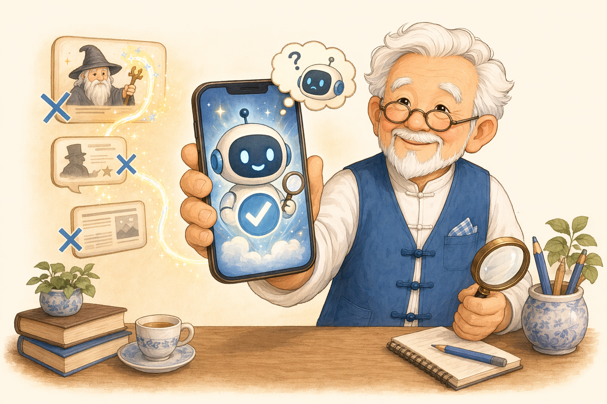

用魔法打败魔法
直接问 AI，让它帮您查证
豆包、元宝等 AI 可以当「查证小助手」。但记住一句话：
AI 是查证助手，不是最终裁判。
它也会说错，有时还错得很自信。
它也会说错，有时还错得很自信。
别只问它「这是真的吗？」——问法有讲究，下一页给您一段可以照着抄的提问。

豆包、元宝等 AI 可以当「查证小助手」。但记住一句话：
别只问它「这是真的吗？」——问法有讲究，下一页给您一段可以照着抄的提问。
